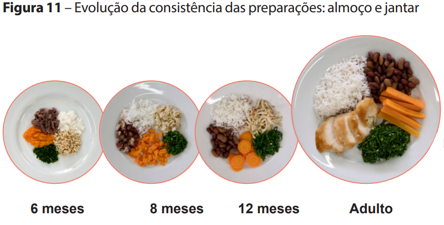
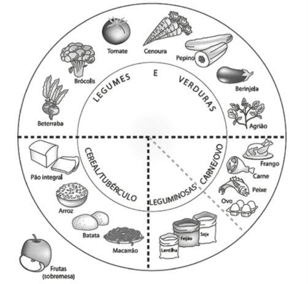

| Grupo Alimentar | Função Principal | Exemplos de Alimentos |
|---|---|---|
| Cereais e Tubérculos | Energia (Carboidratos) | Arroz, milho, macarrão, batata, batata-doce, aipim (mandioca/macaxeira), inhame, cará, aveia. |
| Leguminosas | Ferro e Proteína Vegetal | Feijão (preto, carioca, fradinho, corda), lentilha, grão-de-bico, ervilha, soja. |
| Proteína Animal | Proteína, Ferro e Zinco | Carne bovina, frango, peixe, porco, vísceras (fígado), ovo (clara e gema). |
| Hortaliças | Vitaminas, Minerais e Fibras | Legumes: Cenoura, abóbora, chuchu, beterraba, abobrinha, quiabo. Verduras: Brócolis, couve, espinafre, repolho, tomate. |

Evolução da Consistência:| Refeição | 6 meses (3 refeições sólidas) |
7 a 8 meses (4 refeições sólidas) |
9 a 11 meses (4 refeições sólidas) |
1 a 2 anos (5 refeições sólidas) |
|---|---|---|---|---|
| Desjejum (Café da Manhã) |
Leite Materno | Leite Materno | Leite Materno | Comida da família + LM |
| Lanche da Manhã | Fruta (raspada/amassada) |
Fruta (amassada) |
Fruta (em pedaços) |
Fruta |
| Almoço | Refeição Principal (amassada) |
Refeição Principal (amassada) |
Comida da família (picada) |
Comida da família |
| Lanche da Tarde | Fruta (raspada/amassada) |
Fruta (amassada) |
Fruta (em pedaços) |
Fruta ou lanche saudável |
| Jantar | Leite Materno* | Refeição Principal (amassada) |
Comida da família (picada) |
Comida da família |
| Ceia / Madrugada | Leite Materno | Leite Materno | Leite Materno | Leite Materno |
*Nota sobre o 6º mês: A recomendação oficial é iniciar o 6º mês com 3 refeições sólidas ao dia (almoço e dois lanches). A segunda refeição principal (jantar) costuma ser introduzida de forma gradual entre o final do 6º mês e o início do 7º mês, conforme a aceitação da criança. A textura "amassada" diz respeito ao preparo manual com o garfo, nunca liquidificada.